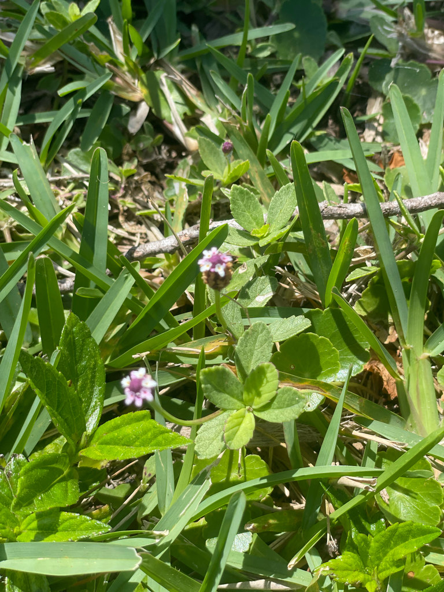

- A native creeping groundcover that grows in lawns, path edges, and disturbed moist ground throughout Florida. The tiny white flower clusters are insignificant to the human eye but are a documented nectar source for small native bees and the larval host for several butterfly species including the White Peacock and Phaon Crescent.
- Tolerates foot traffic and mowing. Forms a flat mat.
- Primarily documented as part of the naturalized park ground flora.
- You'll usually spot these tiny underdogs along the compacted edges of walking paths or tucked into mulch beds after a summer rain. Our volunteers mostly leave them alone unless they get too rowdy.
Native to Florida and the Americas generally, from the eastern United States through Central and South America. Found in lawns, path edges, and moist disturbed ground. Member of Verbenaceae — the verbena family.
- Turkey Tangle Frogfruit is a tough native groundcover that most Floridians have walked past in lawns, path edges, and damp open ground without giving it a name. It forms a low, dense mat of small green leaves studded with tiny flower heads - a white ring of florets around a small dark center, like a matchhead, which gives it another of its common names.
- For a plant this small, its wildlife value is large. It is a nectar source for bees and many small butterflies and a larval host for three butterflies in particular - the White Peacock, the Phaon Crescent, and the Common Buckeye. The Phaon Crescent depends almost entirely on frogfruit and its close relatives to complete its life cycle.
- It tolerates drought, flooding, foot traffic, mowing, compacted soil, and salt, which is why it is increasingly planted as a low-water lawn alternative and for erosion control. At Palma Sola it does the quiet work of covering ground and feeding pollinators close to the soil.
A documented larval host for the White Peacock and Phaon Crescent butterflies. A useful nectar plant for small native bees despite the tiny flower size. One of the butterflies' host plants that is genuinely inconspicuous — visitors rarely notice it but it supports several common Florida butterfly species.
Tiny, in a compact head: a ring of white to pale-purple florets around a small dark center, on a slender stalk held just above the foliage. Blooms over a long warm season.
A tiny dry two-parted fruit; the plant also spreads readily by creeping stems that root at the nodes.
Small, opposite, ovate to spatulate, with a few teeth toward the tip.
Low, mat-forming, creeping groundcover rooting as it spreads.
A flat green mat in damp or open ground with tiny matchhead-like flowers on short stalks. Look for small butterflies working the blooms low to the ground.
This isn't an edible plant, but it's harmless — not toxic to people or dogs.
- © conniecowan (CC-BY-NC), via iNaturalist